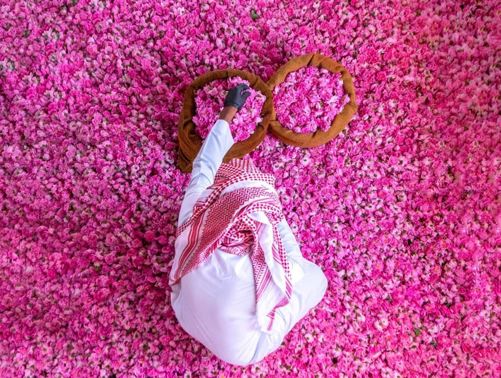
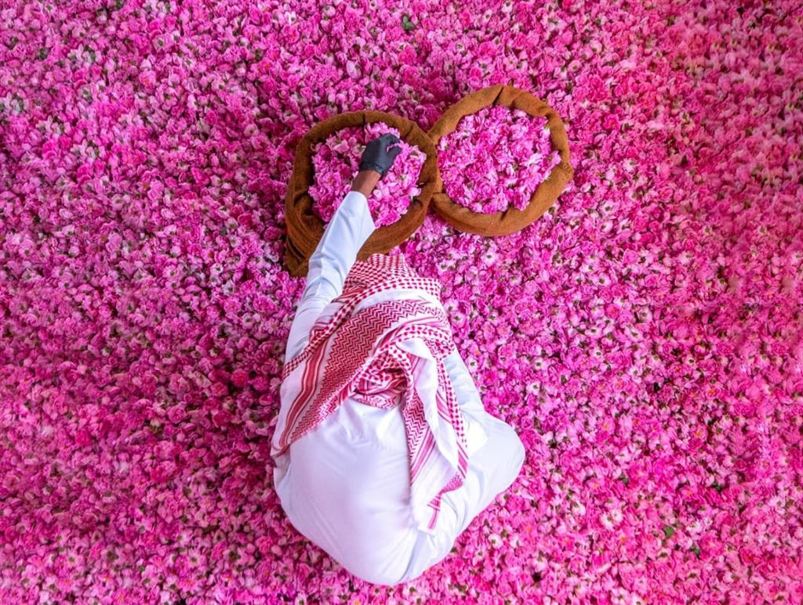
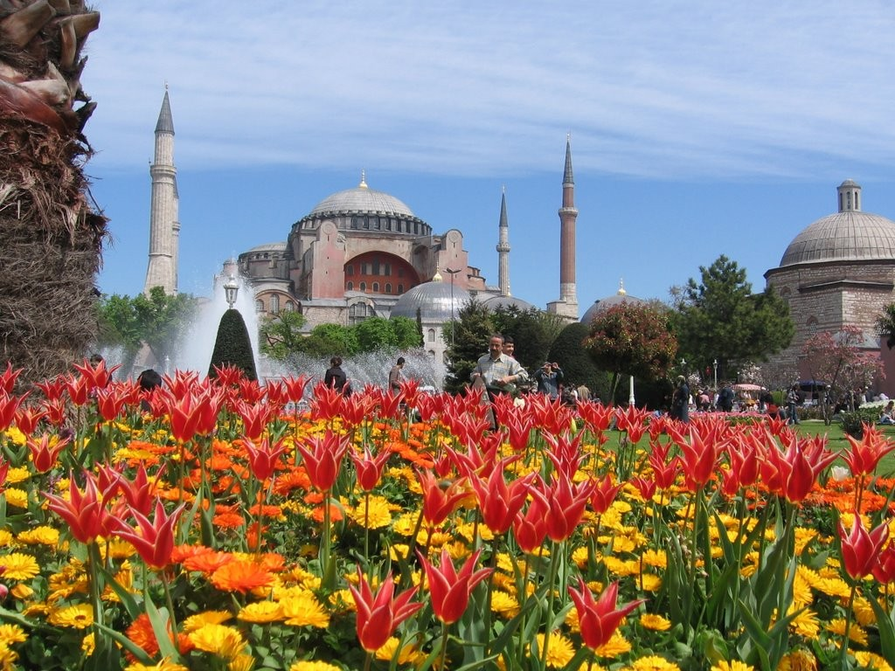
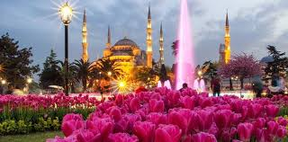

- Taif’s Rose Fields
- Miracle Garden, Dubai
- Tulip Garden, Istanbul
The life cycle of the Taif’s roses begins in December of each year, when farmers return to care for their fields and bushes. After 55 days, their scent mixes with the fragrant lush juniper trees in the gardens’ paths. The rich colors of nature mix, announcing the season of picking rose petals in the same time early spring of every year. They are then transported in bushels to Taif’s rose oil extraction factories.
.webp) 

Each season, as the weather begins to cool at the onset of winter, the gates reopen at Dubai Miracle Garden. With more than 150 million flowers in full bloom, this 72,000-sq-m paradise has flowered into one of the region’s most picturesque, sweet-scented destinations since it first opened nearly nine years ago – fittingly, on Valentine’s Day.


Experience the breathtaking beauty of the Istanbul Tulip Festival 2023 as up to 30 Million tulips adorn Istanbul and its multiple parks. Tulips are actually native to Turkey, and during the Istanbul Tulip Festival, you can witness the complete rainbow of colors as the city turns into a giant bouquet.
 